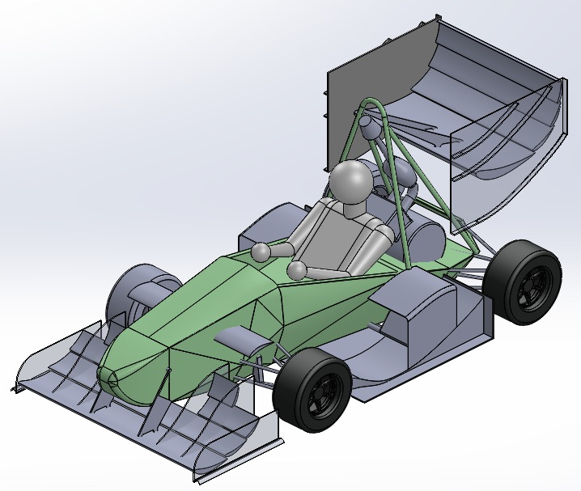

Clubs
My work with Duke’s Formula SAE and high-power rocketry teams.

Duke Motorsports
Splitting the front wing to reduce separation, controlling edge flow, and making the carbon-fiber parts.
View project
Duke AERO
Control-surface CFD, automated OpenRocket searches, and Python flight models for Duke AERO.
View project